Галилея. Древняя синагога Арбель
Синагога в районе местечка Арбель, который упоминается и в ТаНаХе, особенная: у неё, единственной во всей Галилее, вход устремлён не на юг, где Иерусалим, а на восток.
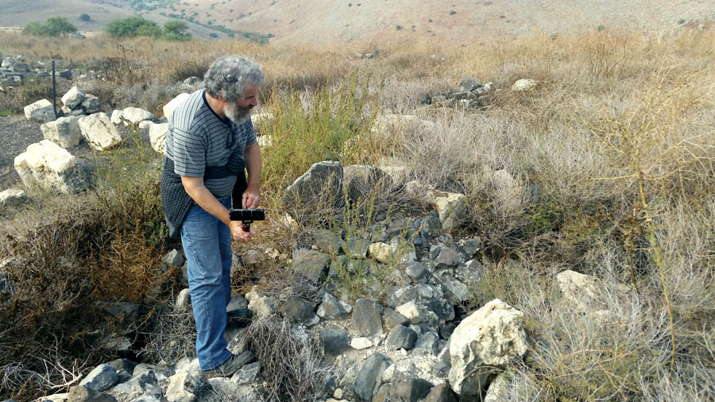
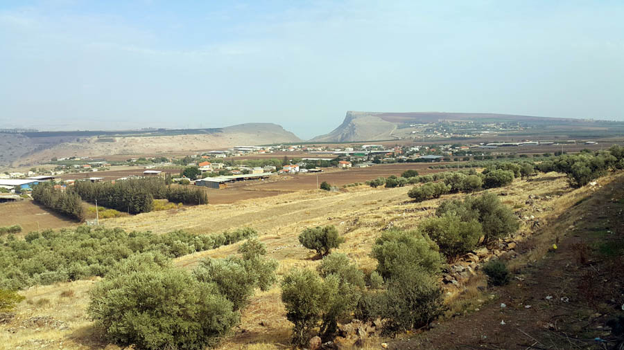
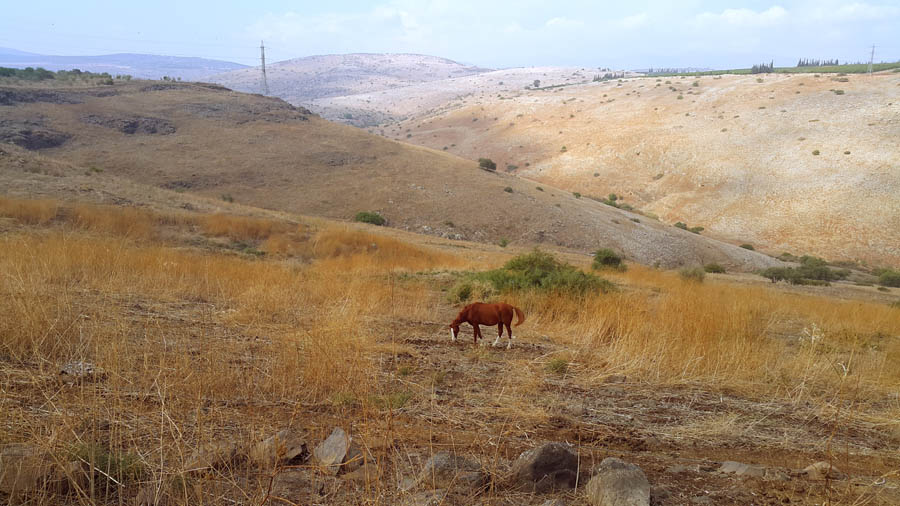
По дороге к поселению Арбель /вид на гору Арбель/
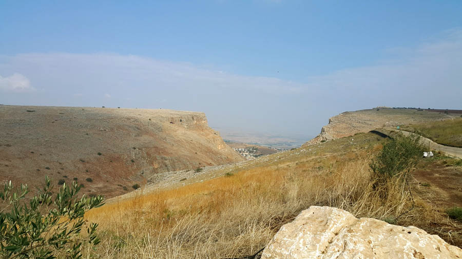
Во времена Наполеона некоторые полагали, что гора Блаженств — это гора Арбель, расположенная на западном берегу Галилейского озера, южнее Капернаума. Гора Арбель нависает прямо над Кинеретом севернее города Тверия. Высота горы 181 метров над уровнем моря или 400 метров над Кинеретом.
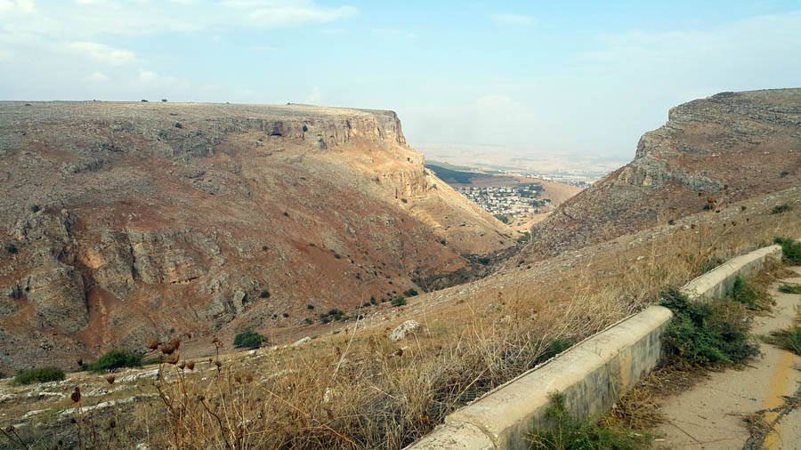
Вид на Генисаретское море /очеро Кинерет/
Всякий раз когда осматриваю древние синагоги Израиля, я прикасаюсь не просто к истории, но к корням своего рода, ощущаю неразрывность цепи поколений еврейского народа. Это всегда волнительно - ступать там, где ходили наши отцы. Вхожу тем же входом что и они в молитвенный дом, преступаю к арон а-кодеш - месту хранения кожаных свитков Торы, поворачиваюсь лицом к воображаемому кахалю, расположившемуся на седалищах ступенями по периметру и вместе с ними произношу наше ШМА.
Синагога в районе местечка Арбель, который упоминается и в ТаНаХе, особенная: у неё, единственной во всей Галилее, вход устремлён не на юг, где Иерусалим, а на восток. Одно из объяснений связано с тем, что два выдающихся раввина времён до-вавилонского пленения, поднимаясь тропой от озера Кинерет, заметили незнакомую им звезду на востоке, что расценили как знак, что Мошиах (Мессия) придёт этой дорогой с востока. Здесь позже и была построена синагога.
Этот вход с востока, ожидает пришествие Царя подобно, как кос (бокал для пророка на столе Седера) и кисе (особый стул для брит-милы) Элияу ожидает пророка. Мой народ все еще ждет нашего Мессию и однажды встретит его с восклицаниями "барух а-ба!" и рыданием о Пронзенном каждое колено особо. И Мошиах Иешуа вернется на горы Галилейские, где некогда ступали Его ноги. И как знать, возможно еще посетит этот молитвенный дом воскликнув наше ШМА...
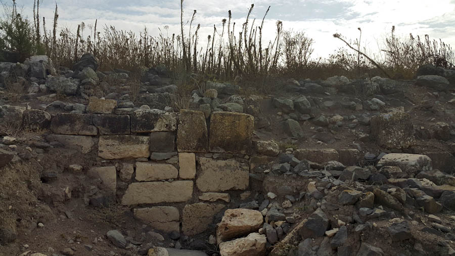
Часть стены, окрушавшей поселение Арбель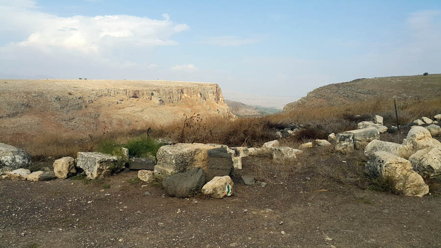
Учёные производившие здесь раскопки (англичане в 1875 и немцы в 1905 г.г.), отнесли появление строения ко II-ому - IV-ому векам, но бесспорно, что оно стоит на более ранних фундаментах, относящихся к периоду Второго Храма. Здание было построено из светлого камня и выгодно выделялось на фоне тёмных базальтовых строений поселения. Вместе с тем, местный базальт также был использован в некоторых деталях здания.
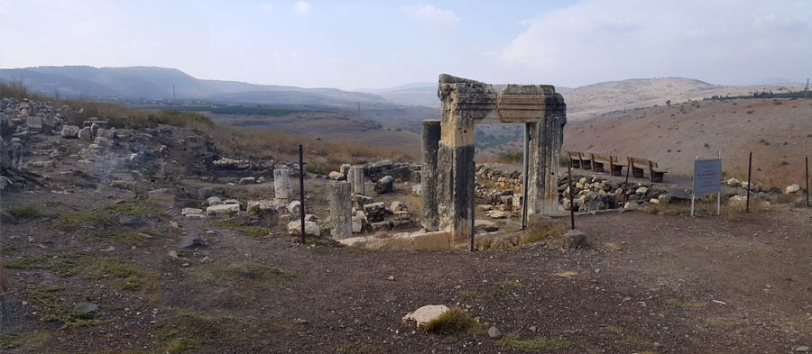
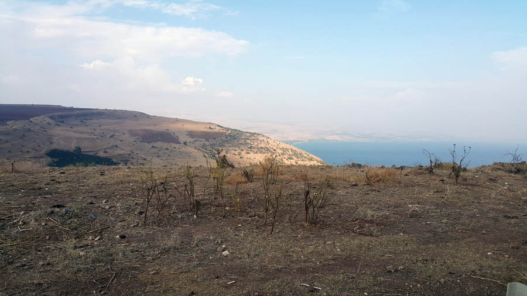
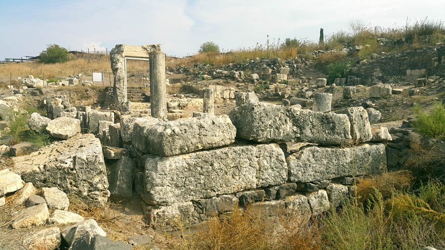
.Синагога в Арбель
Роланд Кулесский
Тысячелетий лик в останках синагоги,
не смерти в них читается вердикт:
так путнику шлагбаум, - не дороге,
так к жизни не теряет вкус реликт.
Скелет в объятьях ужаса, в колючках
геккон позирует, готовый вмиг удрать,
и камень тела словно болью скрючен,
и время не спешит... хватило б веры ждать
с востока избавления, пророку
себя вверяя, распахнувши вход:
спор с временем не ограничен сроком,
пока небесный не разрушен свод...
Кинерет обмелел тогда, как ныне,
шли двое в гору от него, зарёй,
дорогой на Арбель, таясь от фелистимлян.
Спросил один: ты видишь, предо мной
звезда с востока, что ты скажешь, рабби?
- Машиаха звезда, его отсюда ждать,
Кинерета разверзнувшись, поглОтят хляби
врагов Его!
- Когда?
- Мы можем лишь гадать...
Прийти, на камень положивши руку,
сказать себе: терплю и ждать готов как ты,
так хочется примером стать друг другу...
хотя б для этого не стоит жечь мосты...
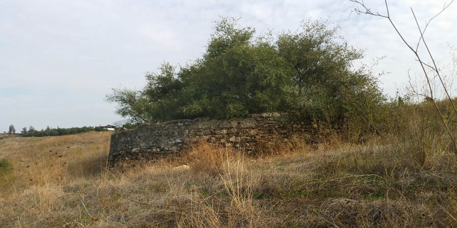
Окрулая часть стены /возможно защитная башня/ поселения Арбель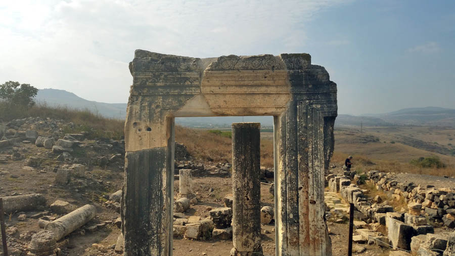
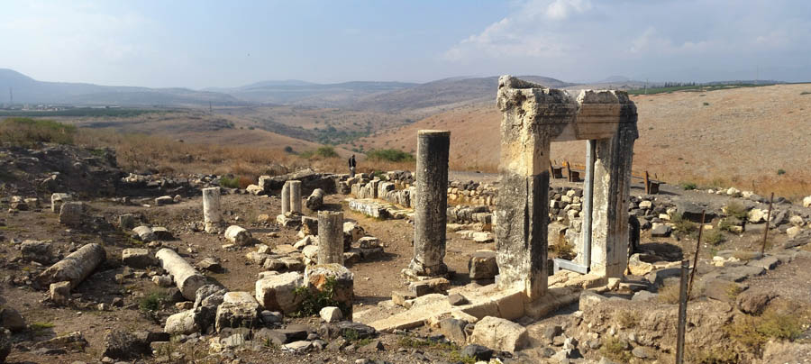
.Синагога, в отступление от правил, была поставлена не на высшей точке поселения. Очевидно, что выбор места объяснялся рельефом местности. Из-за наклона горы строение было расположено как бы на двух террасах. Центральная ось здания простиралась с Севера на Юг. Наружная длина составляла 20.35 м., а ширина - 18.50 м. Фасад располагался на Востоке, где находился и центральный вход. Его двери имели высоту 3.55 м. Они хорошо сохранились и радуют туристов украшениями из мелких окружностей. Над притолокой располагалось окно.
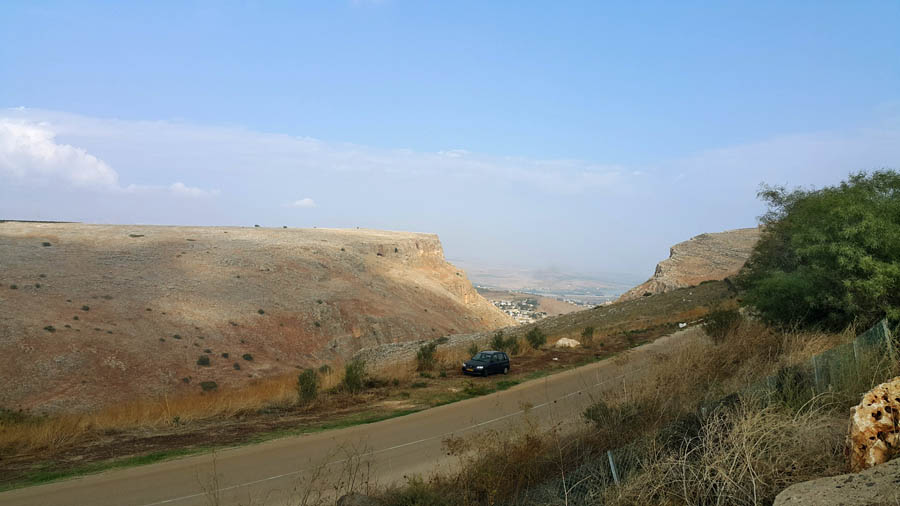
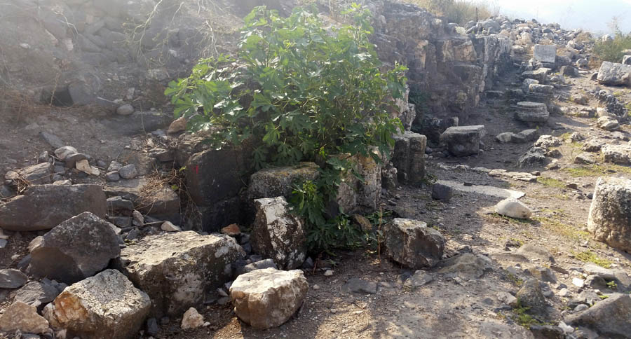
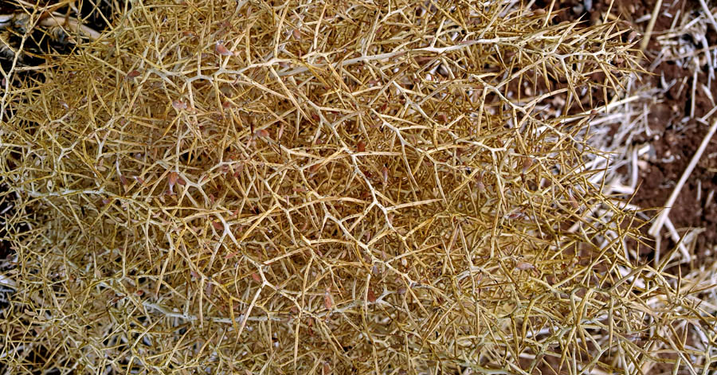
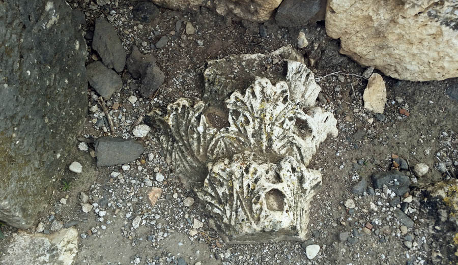
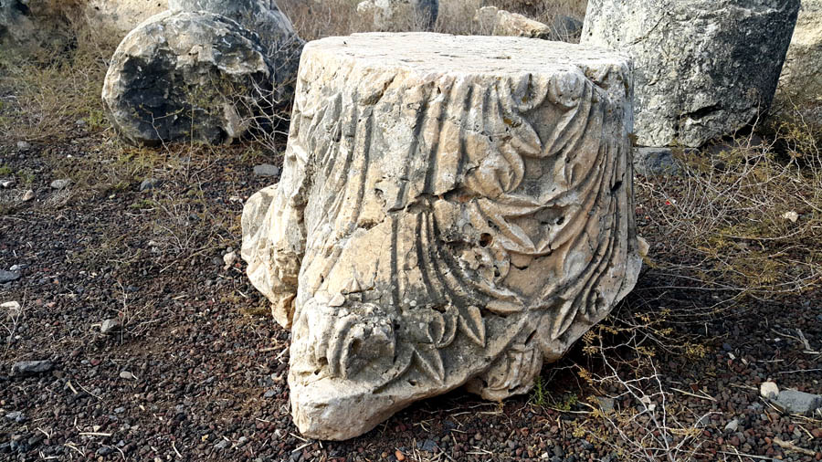
Коринфские капители, некогда венчавшие колоннаду раскошного молитвенного зала
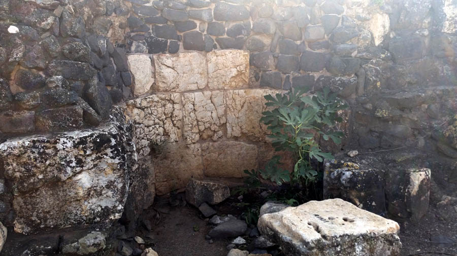
Арон а-Кодеш / место для хранения свитков Торы / и пробившийся сквозь древние камни росток смоквы
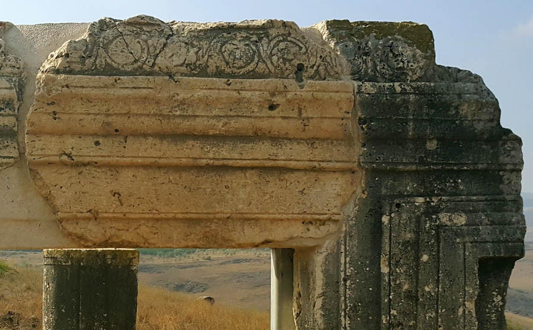

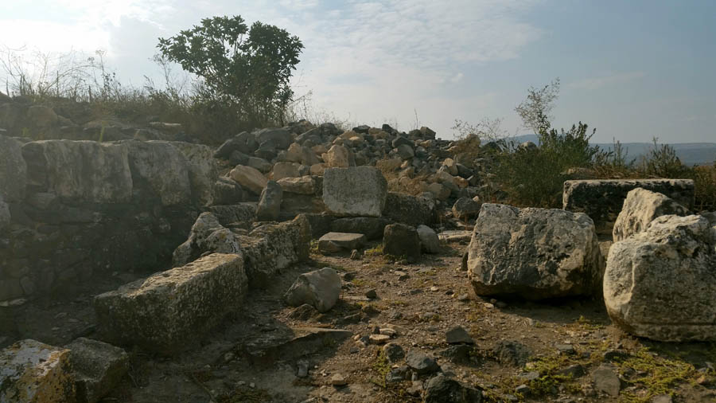
.Молитвенный зал, имевший размеры 19 х 17.7 м., обладал традиционными тремя рядами колонн, расположенными в виде буквы "П", с угловыми сочленениями сердцевидной формы. Колонны имели капители коринфского ордера различной конфигурации. С Востока к синагоге примыкал двор, его окружали другие строения.
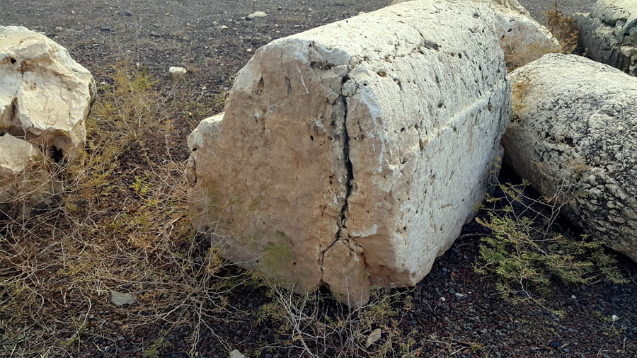
Характерные для галилейских синагог угловые колонны сердцевидного сечения
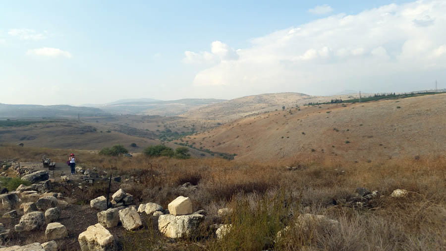
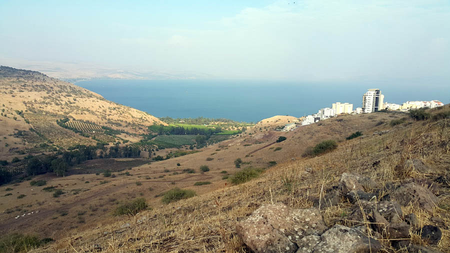
Вид на Тивериадское море / озеро Кинерет /
Автор: Эфраим Калиш. / фото: Эфраим и Вета Калиши /
В публикации использованы материалы israeltoday.ru
Музыка Даниэля Круглова, стихи Роланда Залесского, читает Эфраим Калиш